My husband, Ted, and I live on a farm in Peru, Vt., near the top of a mountain. Part of our land is a sugar lot, a section of woods that we tap for maple syrup. We keep six horses on our farm: two riding horses and four Brabants, an old-fashioned breed of draft horse. Before I met Ted, he lived on the farm by himself, driving and riding his horses, and sugaring with them in season.
I studied plant pathology and tree fruit diseases in graduate school, and when I met Ted, I was a research assistant for a laboratory at Cornell University. When we got engaged, I left my job in New York to move to the farm. I have a passion for agriculture, and in the three years I’ve lived here, I’ve planted a large vegetable garden and started improving the orchard. I’m also learning how to drive horses (see photo).
We end up putting more work into the horses than we get out of them, but that’s OK because we enjoy them. Brabants are the ancestors of the modern American Belgian draft horse: They are shorter and stockier than the American Belgian, with more feathering on the legs. Their calm temperament, hardiness and strength make them ideal work partners for our Vermont farm, where the winters are long, cold and snowy.
Ted bought his first team of Brabants, Millie and Donna, when they were young and green. He sent them to a local man to be trained to drive, and Ted took draft horse driving lessons. Now, he uses them for work and driving on the farm, and sometimes even ventures onto the local roads and trails in our carriage.
After six years of working with Millie and Donna, Ted wanted more Brabants, specifically a young team he could raise and train himself. There aren’t many Brabants in this country, so the American Brabant Association organizes group trips to Belgium to visit farms and import horses. In 2000, Ted went on one of these trips and found two horses to bring home, John and Louisa- or, to use their official names, John van de Vosberg and Lowies van de Lindehoef. They were yearlings when they arrived on the farm, and Ted could wrap his arms all the way around their bellies. Now they weigh about a ton each. Ted worked with them every day when they were young, and I think his efforts are evident in their trusting demeanors.
When I moved here, I signed up for a driving clinic in Brattleboro, Vt. At the end of the five-day course, I could get the harnesses on and off and hitch up the horses with confidence.
In the early spring, we use the horses to collect sap for maple syrup. We don’t sell our syrup. We make it for fun and for our own use, and we invite friends and family over to help and to socialize.
When a tree is big enough to be tapped, we drill a small hole in the tree, put a spout into the hole, and then hang buckets to catch the sap. When the sap starts running, we hitch the horses to a sled that holds the gathering tank, and drive our team down to the sugar lot. Whenever we come upon full buckets, we stop the team and empty the sap into the tank.
Millie and Donna are old hands, and they know the job as well as we do. John and Louisa are starting to learn the routine. We simply walk up to the full buckets, and say, “Step up!” and the team hauls the tank up to where we’re standing so we can empty our buckets. When the tank is full, we empty it at the sugarhouse on our property (see photo), where our sugaring partners, Melvin and Peggy, boil the sap down to syrup. In a good year we might produce 50 gallons of syrup.
Ted is the caretaker of the horses, and I am the caretaker of the garden. I like to search through catalogs to find the tastiest, most unique and most nutritious varieties that grow in our climate. I’ve decided that if I’m going to make the effort to grow my own food I might as well reap all the taste and health rewards I can.
I love making salads with unusual greens: purslane is a very healthy green; Italian dandelion produces well all season and has a bitter taste that we like; and sorrel adds a lemon flavor to salads. I grow plain old lettuce as well. My favorite varieties are ‘Speckles’ and ‘Devil’s Tongue.’
For winter storage, we keep our potatoes and squash in a cool room, but we freeze most of our produce. My husband does most of the food processing. He bakes pumpkins and stores them either as frozen pies or puree. He also freezes a lot of tomatoes after removing the seeds and skins. He blanches other veggies such as beans and peas and freezes them, as well as homemade soups. (We really need to get a backup generator in case of power outages.)
Someday, I may decide to grow small plots of grains, the land for which could be plowed using our horses. Next year, I plan to put in a root cellar to keep our produce through the winter, but I haven’t been ready to commit to a site or design yet. I’d rather be sure I have things right before I start on the project, because when I do build the root cellar I want it to last indefinitely.
It’s going to take me years to fully develop my ideal garden. For now, I’ve planted a 60-by-80-foot plot with vegetables, cutting flowers, edible flowers, strawberries, and a bee, butterfly and hummingbird garden. I designed the garden on paper before planting, and divided the vegetable part of the garden into four sections, roughly by family, to make crop rotation simple. Then I divided each quadrant into 4-by-4-foot beds with permanent paths between them, an idea I got from Mel Bartholomew’s Square Foot Gardening. I love the small bed system, because each bed is so easily maintained and the work is divided into manageable chunks.
I work each raised 4-by-4-foot bed intensively, and I grow as many crops as I can vertically. For example, I twine tomato vines up a rope hung from a trellis. I also prefer vining cucumbers, summer squash and zucchini to bush varieties. Cantaloupe has grown well for me on a trellis, and last summer, we also had amazing results with a variety of zucchini called ‘Zucchino Rampicante.’
Some crops need a lot of special attention to produce well in our short growing season. To get red tomatoes before fall, I start with large transplants and use red plastic mulch, which encourages earlier fruit production and increases yields because of the way it reflects light onto the plant.
I planted eggplant for two years without getting a single fruit from any of my plants. I have to start the eggplant early to give it a chance to set fruit in the short period of warm weather we have. I’ve also had trouble with the Colorado potato beetle. With our short growing season, there can be no setbacks. I’ve got to start with big and healthy growing plants and make sure they never suffer a heavy infestation of anything. Last year, I finally managed to get big, healthy plants in the ground in June, fought off the Colorado potato beetles, and got a bumper crop of eggplants for the first time.
Beginning next spring, I’m also going to expand our fruit production, which currently consists of strawberries, blackberries and the apples from long-neglected apple trees. My goal is to grow enough fresh fruit so we never have to buy any during the growing season and can put away significant quantities for winter.
Right now, we have a small orchard consisting of several apple trees, two pear trees and a cherry tree. This little orchard has been abandoned for so long that it would probably be more efficient to chop the trees down and plant a new orchard. But I’m sentimental about neglected trees that have managed to survive for 25 years, so I have started to bring the orchard back. I’ve pruned it, limed it and fertilized it organically and have begun using minimal organic sprays.
I am also planning a new fruit planting, which consists of dwarf fruit trees (smaller trees will be easier for me to work with, and they bear more precociously), berries, and unusual and native edibles that will survive in our climate. I’m dreaming of an elaborate, meticulously designed fruit orchard: a huge project that will keep me occupied for years. I’m looking forward to ordering my trees this spring and getting started.
SHARE YOUR STORYNobody knows more about the joys and challenges of wiser living than those of you who are pursuing the dream. Tell us about your experiences with the self-reliant life. Submit your firsthand report (1,500 to 2,000 words), with photos, to firsthand@MotherEarthNews.com, or mail to “Firsthand Reports” at Mother Earth News; 1503 SW 42nd St.; Topeka, KS 66609. We’ll pay $150 for each story we publish. |
|
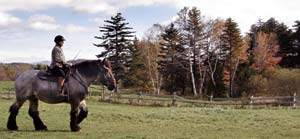 COURTESY JESSICA KLICK Jessica Klick’s husband, Ted, rides John, a Brabant draft horse. |
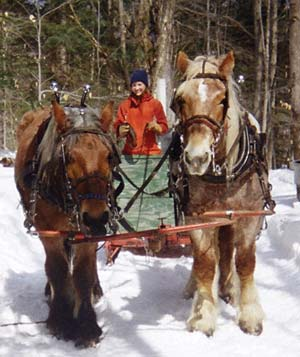 COURTESY JESSICA KLICK Jessica drives two other Brabants, Millie and Donna. |
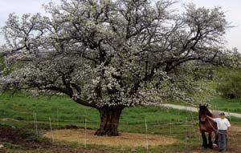 COURTESY JESSICA KLICK Jessica and Ted’s homestead has assorted fruit trees, including this apple tree. |
|
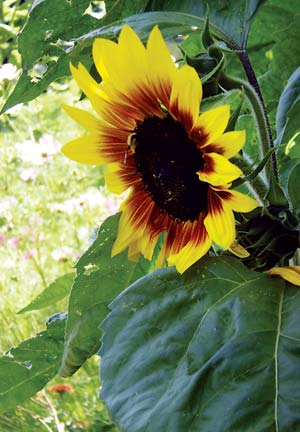 COURTESY JESSICA KLICK Jessica plants cutting flowers, as well as edible flowers in her garden. |
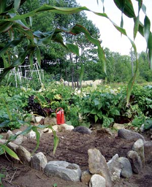 COURTESY JESSICA KLICK Jessica and Ted keep a large garden on their Vermont homestead. Jessica plants vegetables to eat seasonally, and store for the winter. |
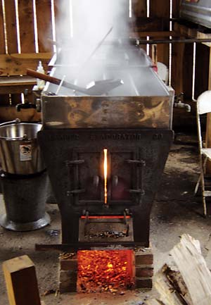 COURTESY JESSICA KLICK The sap is cooked down to make maple syrup. |
|
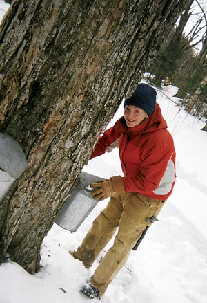 COURTESY JESSICA KLICK Jessica collects sap from a maple tree. |
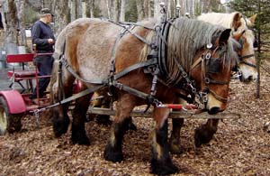 COURTESY JESSICA KLICK Jessica and Ted keep six horses on their Vermont farm. Brabants are a breed of draft horse related to the American Belgian. The horses help collect maple syrup. |
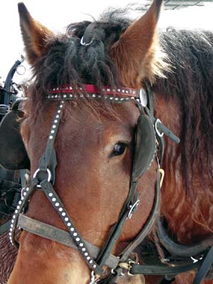 COURTESY JESSICA KLICK This horse, Louisa, came directly from Belgium. |
|
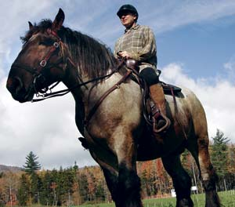 COURTESY JESSICA KLICK This horse, John, came directly from Belgium. |
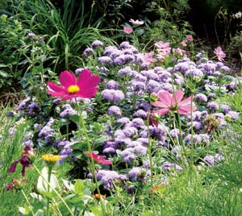 COURTESY JESSICA KLICK To protect the bees, birds and butterflies that visit her garden, Jessica controls pests using the least toxic methods available. |
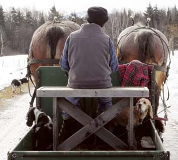 COURTESY JESSICA KLICK Ted heads for home with his Brabant horses. |